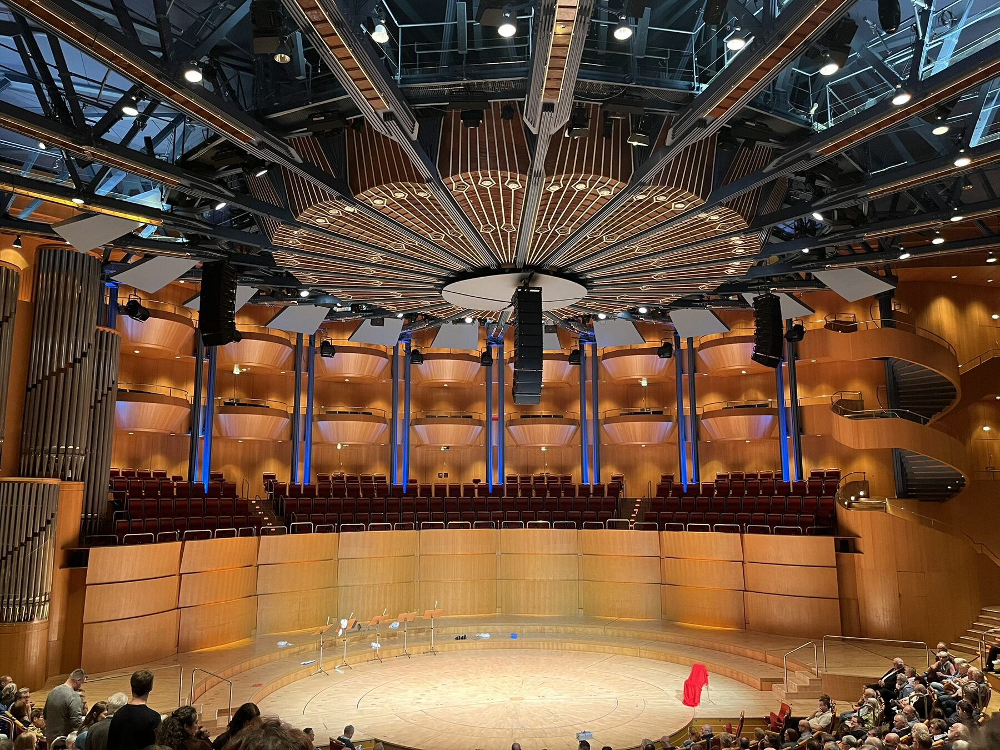
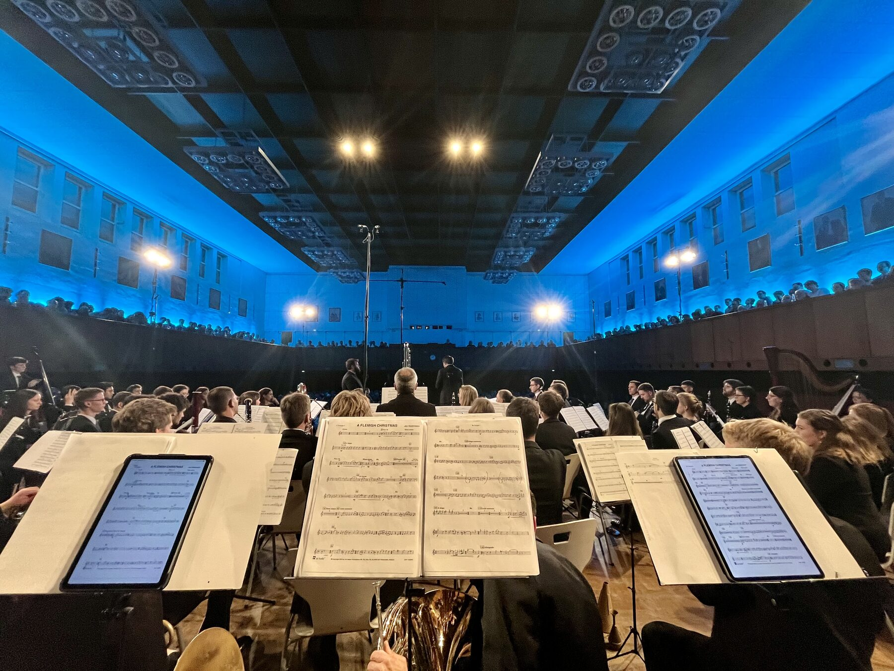
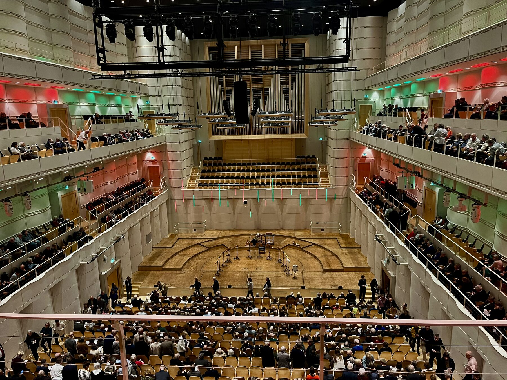
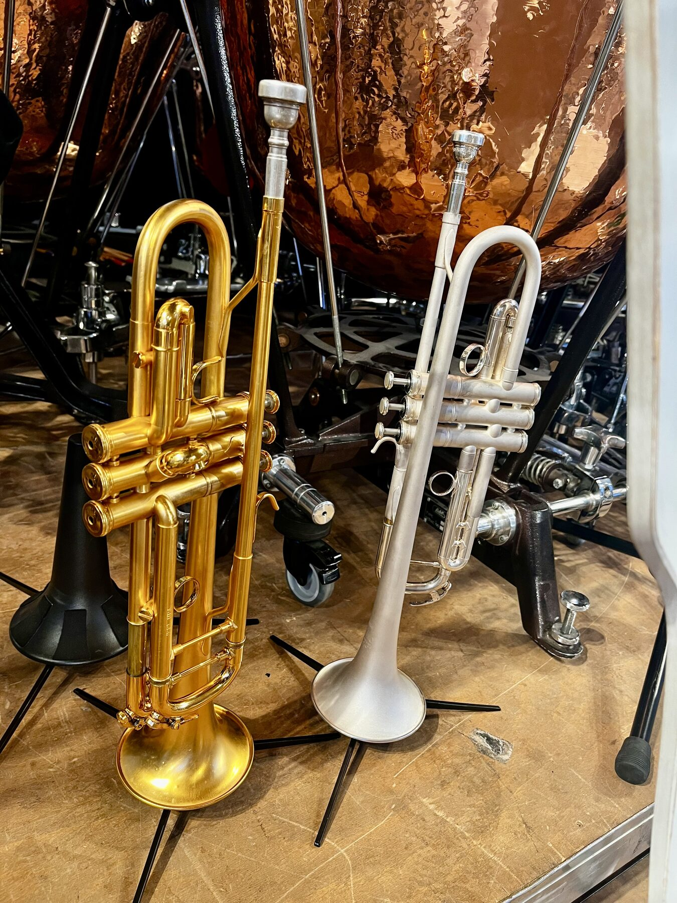
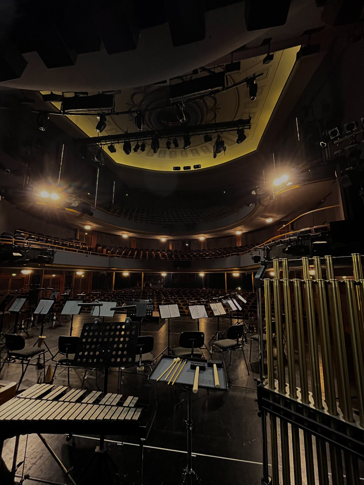
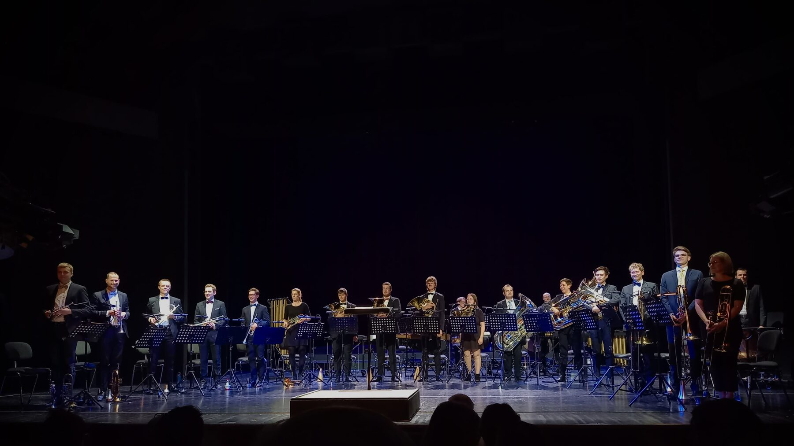
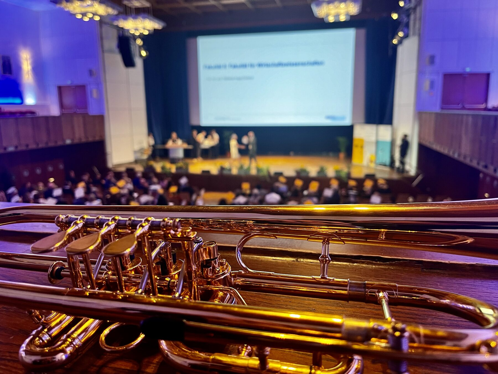
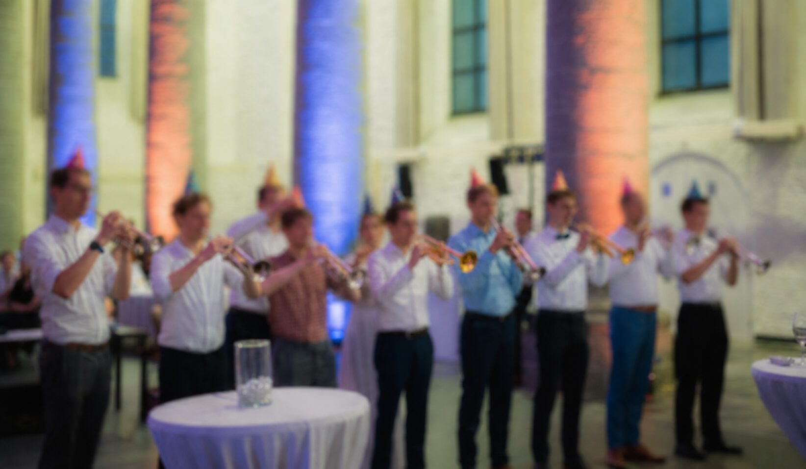

New Concert Project in the Works
A new ensemble project spanning classical and contemporary brass music is taking shape. More soon — stay tuned.

By trumpeters, for trumpeters — concert projects, masterclasses, and professional ensembles from Aachen.
The Aachener Trompetenforum is a collective of trumpet enthusiasts who come together to realize concert projects, share knowledge, and provide professional ensembles for events of every kind.
Founded in the environment of RWTH Aachen University, we bring together students and professionals under one roof — for music that moves people.







A new ensemble project spanning classical and contemporary brass music is taking shape. More soon — stay tuned.
At this year's general assembly, the new board was elected unanimously.
Registration open from March 12. Further info available in the members area.
J.S. Bach · BWV 248 — a festive concert with the Aachener Trompetenforum.
M. Mussorgsky · Pictures at an Exhibition — arranged for large brass ensemble.
A new ensemble project spanning classical and contemporary brass music is taking shape. More soon — stay tuned.
At this year's general assembly, the new board was elected unanimously.
Registration open from March 12. Further info available in the members area.
J.S. Bach · BWV 248 — a festive concert with the Aachener Trompetenforum.
M. Mussorgsky · Pictures at an Exhibition — arranged for large brass ensemble.

Access to sheet music, internal info, and schedules — exclusively for members.
From an intimate quartet to a full festival ensemble — we provide professional brass players for concerts, weddings, corporate events, and cultural projects.
Request an Ensemble